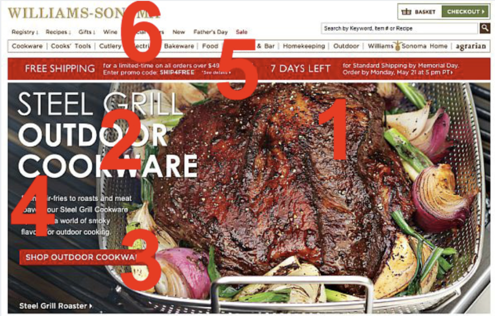

Web Design
March 25, 2020
Fonts
Pair a bold serif header with a nondescript sans-serif subheader for an approachabe yet sophisticated look.

Serif
- Has “serifs” at the end of the letters
- Its the oldest font, from 15th century
- Gives a trustworthy classic feeling
Sans-serif
- Simpler, cleaner, modern, no serifs
Slab serif
- Has thick slab -like serifs
Visual Hierarchy
Golden Ratio
1.618
Hick’s Law
With every additional choice increases the time required to make a decision.
Fitt’s Law
The time required to move to a target area is a function of the distance to the target area and the size of the target.
Make things physically easy to use. Make buttons close and big, easy to click. But its not linear, the benefit of large size tapers off, there is a sweet spot.
The size of a button should be proportional to how often its clicked.
The Law of Thirds
An image should be divided into nine equal parts by two equally spaced horizontal lines and two equally spaced vertical lines. Important compositional elements should be placed along these lines or at their intersections.
Occam’s Razor
The simplest solution is usually the best.
Gestalt Design Laws
The whole is a separate entity from its parts, and the whole is perceived first.
Things that go together should be perceived as one.
Things that look similar will be naturally associated with each other.
People prefer symmetry.
People eyes finish unfinished or incomplete shapes naturally.